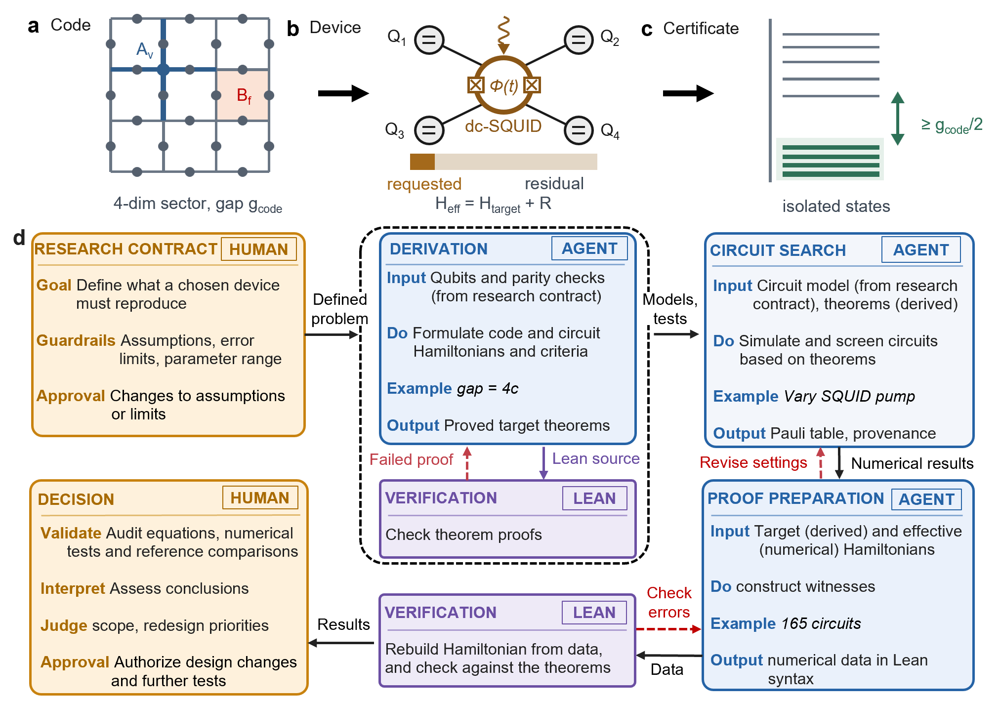
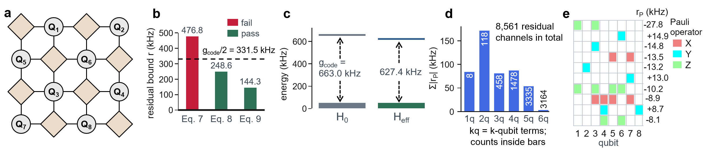

AI agents generate Lean 4 proofs of toric-code Hamiltonian properties and spectral-gap perturbation bounds certifying that a superconducting device Hamiltonian retains the code space.
Abstract
Mapping a prescribed many-body Hamiltonian to a particular quantum hardware is generally an approximate process, resulting in both intended and unwanted quantum dynamics. We introduce an AI-agent-assisted workflow that uses Lean to establish whether an effective device Hamiltonian retains the intended low-energy subspace of the target many-body Hamiltonian. We demonstrate this approach with topological quantum error correction (QEC), providing, to our knowledge, the first Lean-verified pipeline connecting a code space to low-energy states of a device model. Starting from qubits and parity checks, the pipeline constructs the ideal Hamiltonian whose lowest energy states form the intended code space, and determines the excitation gap that protects that code space. It then tests if the device retains the required number of isolated low-energy states and quantifies how closely their subspace matches the intended code space. We compare three bounds on unwanted energy shifts obtained by: summing the interaction strengths, grouping the anticommuting Pauli interactions, and diagonalizing the Hamiltonian. Pauli grouping yields a bound that is tighter than the conventional sum and closer to the diagonalization result, avoiding overly conservative compensation requirements. The workflow also identifies the strongest unwanted interactions and the qubits they affect, providing specific targets for improving device couplings and controls. We demonstrate our framework using an eight-qubit toric-code array on a superconducting device, where the same driven device generates both the required four-qubit interactions as well as unwanted dynamics. An AI agent identifies viable device parameters within a prescribed leakage budget, and Lean verifies four isolated low-energy states close to the ideal code space. Our workflow supports predictive hardware engineering for analog implementations of QEC codes.
Problem
Mapping a topological QEC code Hamiltonian onto analog quantum hardware is approximate and introduces unwanted interactions. It is unclear whether the device's effective Hamiltonian keeps the intended low-energy code space with the correct degeneracy and gap.
Approach
An AI-agent workflow, governed by a human-specified research contract, constructs the ideal toric-code Hamiltonian from stabilizer checks. It formalizes the Hamiltonian's properties in Lean 4, including Hermiticity, Pauli algebra, commutation, and code distance. The agents derive and formalize a gap-versus-residual theorem and a tighter bound based on grouping anticommuting Pauli terms. Numerical residual norms are converted to rational certified bounds that Lean checks, and an agent searches device parameters for a driven dc-SQUID architecture.

Figure 1: From a topological-code request to a certified physical low-energy sector. (a) Cell-complex incidence data specify the periodic toric-code Hamiltonian, its four-dimensional code sector, and its gap. (b) A driven dc-SQUID connected to an array of four qubits ( Q_{1.2.3.4} ) generates the requested four-body checks together with thousands of non-target residual terms, producing an effectiv
Results
For an eight-qubit L=2 toric code on driven-SQUID couplers, Lean verifies four isolated low-energy states close to the ideal code space. The Pauli-grouping bound is tighter than the sum-of-strengths bound and closer to the diagonalization result. The workflow also identifies the dominant unwanted interactions and the qubits they affect.

Figure 2: Map of L=2 toric code on a SQUID coupled eight qubits. (a) Periodic qubit layout for L=2 toric code where brown diamonds represent the SQUID device. (b) Theorem 1 tested on H_{\rm eff} of the selected circuit with criterion described in Eq. 7 - 9 . It establishes that retaining the interaction algebra [Eq. 8 , Theorem 2 ] gives a bound closer to the dense witness [Eq. 9 ]. For circuit de